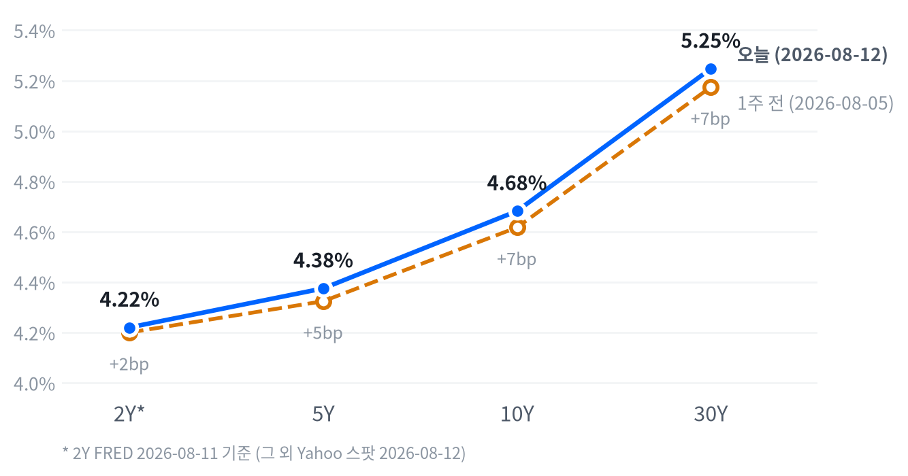

이날 시장의 핵심 동인은 두 갈래다. 하나는 7월 CPI(헤드라인 MoM +0.1%/YoY 3.4%, 근원 MoM +0.2%/YoY 2.5%, BLS 발표 기준)가 다우존스·FactSet 컨센서스와 정확히 부합한 인라인 결과로 나오며 9월 금리 인상 경계를 낮춘 것이고, 다른 하나는 CoreWeave·Super Micro Computer·Nebius의 실적·수주 서프라이즈가 AI 인프라 밸류체인 전반에 매수세를 촉발한 것이다. 두 재료가 겹치며 나스닥·러셀2000, 그리고 루멘텀·코히런트 등 광인프라주와 마이크론·씨게이트 등 메모리주가 동반 강세를 보였다.
크로스에셋 신호는 대체로 정합적이다. 벨리 구간 국채금리(5Y·10Y)가 완만히 낮아지고 금이 급등한 것은 인상 경계 완화와 궤를 같이하며, CME FedWatch 9월 인상 확률이 발표 후 약 40%로 낮아진 점과도 부합한다.
다만 30Y는 오히려 올라 12월 인상 확률(73%)이 여전히 유지되고 있음을 반영했고, 다우가 보합에 그친 채 커뮤니케이션서비스·소재·임의소비재가 하락한 점은 이번 랠리가 전면적 위험선호 회복이라기보다 AI capex 밸류체인에 국한된 색채가 짙다는 뜻이다. WTI가 호르무즈 협상 기대에 하락한 점도 헤드라인 인플레 하방 재료로 CPI 결과와 방향이 어긋나지 않는다.
다음 촉매는 연준의 금리 경로 재가격이 12월 FOMC로 계속 수렴하는지 여부다. 10월(53% 이상)·12월(73%) 인상 확률이 유지되는 가운데 다음 노동시장 지표(8월 NFP, 9월 초 발표)와 8월 PCE·PPI가 이 확률을 다시 흔들 가능성이 높고, 넷플릭스·알파벳발 빅테크 개별 리스크가 다른 대형 기술주로 전이되는지, 그리고 마이크론·SK하이닉스의 후속 가격 가이던스가 메모리 랠리의 지속성을 가늠할 다음 확인 지점이다.
| 지수 | 종가 | 전일比 | 등락률 |
|---|---|---|---|
| 러셀2000 | 3,045.48 | +18.36 | +0.61% |
| 나스닥종합 | 26,588.49 | +143.04 | +0.54% |
| S&P500 Growth | 141.49 | +0.63 | +0.45% |
| S&P500 | 7,748.50 | +20.30 | +0.26% |
| S&P500 Value | 236.60 | +0.23 | +0.10% |
| 다우존스 | 53,770.27 | -21.58 | -0.04% |
| 섹터 | 종가 | 전일比 | 등락률 |
|---|---|---|---|
| 기술 | 188.86 | +2.77 | +1.49% |
| 유틸리티 | 43.84 | +0.21 | +0.48% |
| 필수소비재 | 85.08 | +0.39 | +0.46% |
| 헬스케어 | 168.44 | +0.43 | +0.26% |
| 금융 | 57.92 | +0.12 | +0.21% |
| 리츠 | 44.49 | +0.09 | +0.20% |
| 에너지 | 61.03 | +0.10 | +0.16% |
| 산업재 | 185.88 | +0.18 | +0.10% |
| 임의소비재 | 117.89 | -1.35 | -1.13% |
| 소재 | 52.58 | -0.66 | -1.24% |
| 커뮤니케이션 | 110.27 | -1.56 | -1.39% |
나스닥과 S&P500은 09:30 ET 정규장 개장과 동시에 이날 고점 부근을 찍었다. 나스닥은 개장가(26,677.67) 대비 11:30 ET 저점(26,532.18, -0.55%)까지 밀렸다가 이후 되돌림에 나서 종가는 저점 대비 반등한 수준에서 마감했고, S&P500도 09:30 시가가 사실상 고점이 된 채 10:30 ET 저점(-0.35%)을 거쳐 낙폭을 일부 되돌렸다. 08:30 ET CPI 발표 직후의 안도 랠리가 오전 중 차익실현 물량에 밀리는 전형적인 패턴이다.
러셀2000은 대형지수와 궤적이 정반대였다. 개장 초반 11:00 ET에 저점(개장가 대비 -0.32%)을 다진 뒤 오후 내내 꾸준히 올라 장 마감 직전인 15:00 ET에 고점(+0.39%)을 찍고 그 부근에서 마감해, 소형주가 장 후반으로 갈수록 상대적으로 강해지는 흐름을 보였다.
엔비디아는 지수보다 훨씬 가파른 변동폭을 보였다. 09:30 ET 저점(220.20, 개장가 대비 -0.38%) 이후 10:30 ET 고점(225.10, +1.84%)까지 급반등했다가 종가는 224.13(+1.40%)으로 고점 대비 소폭 후퇴했는데, CoreWeave·Super Micro·Nebius발 AI 인프라 실적 서프라이즈가 오전 중 대형 AI 반도체주 매수세를 자극한 정황과 부합한다.
이날 최대 상승은 러셀2000(+0.61%)과 나스닥(+0.54%)이었고 성장주 지수(S&P500 Growth +0.45%)가 가치주 지수(S&P500 Value +0.10%)를 크게 앞선 반면 다우는 -0.04%로 사실상 보합에 그쳐, 지수 간 온도차가 뚜렷했다. 섹터에서도 기술(+1.49%)이 압도적 1위였고 유틸리티·필수소비재 등 방어주가 뒤를 이었으며, 커뮤니케이션서비스(-1.39%)·소재(-1.24%)·임의소비재(-1.13%)가 하위권을 형성했다.
다우가 소외됐다는 점은 이번 랠리가 CPI 안도감만으로 설명되지 않는다는 뜻이다. AI 인프라 실적 서프라이즈가 광인프라·메모리·반도체 밸류체인에 집중적으로 온기를 불어넣은 반면 넷플릭스·알파벳 등 개별 빅테크 악재가 커뮤니케이션서비스를 끌어내린 결과로, 포지셔닝 측면에서는 지수 베타보다 AI capex 밸류체인 중심의 종목·팩터 선별 대응이 유효해 보인다.
| 만기 | 종가(8/12) | 전일比 | 1주 전 | 주간 변화 |
|---|---|---|---|---|
| 2Y* | 4.22% | -3.0bp | 4.20%(8/4) | +2.0bp |
| 5Y | 4.375% | -1.0bp | 4.324%(8/5) | +5.1bp |
| 10Y | 4.682% | -0.2bp | 4.617%(8/5) | +6.5bp |
| 30Y | 5.247% | +1.1bp | 5.174%(8/5) | +7.3bp |

8/12 하루로 보면 5Y(-1.0bp)와 10Y(-0.2bp)는 소폭 낮아진 반면 30Y(+1.1bp)는 오히려 올라, 5Y·10Y·30Y가 모두 같은 날 야후 스팟이라는 동일 기준에서도 장기물이 상대적으로 더 눌리지 않는 흐름이 확인된다. 5s30s로 환산하면 하루 만에 +2.1bp 벌어진 셈이라, CPI 인라인 결과가 벨리 구간의 금리 하방 압력으로는 이어졌지만 초장기물까지는 온전히 전이되지 않았다.
1주일 단위로 보면 방향이 더 뚜렷하다. 5Y·10Y·30Y가 각각 +5.1bp, +6.5bp, +7.3bp — 만기가 길어질수록 상승폭이 커지는 전형적인 베어 스티프닝이 한 주 내내 진행됐다. 2Y는 주간 기준 +2.0bp로 완만하게 올랐지만 이 구간은 FRED 8/4~8/11 기준으로 벨리·장기물보다 하루 이상 뒤처진 데이터라 단정적으로 해석하기는 이르다.
2s10s(46.2bp, 혼합 기준)와 동일자 FRED 기준(48.0bp)의 격차가 1.8bp에 불과하다는 점은 이 스프레드가 날짜 불일치보다 실제 커브 수준을 상당히 잘 반영하고 있다는 뜻이다. 87.2bp에 달하는 5s30s는 커브가 여전히 정상화(디스인버전) 국면에 있으며 장기 구간이 상대적으로 가파르게 서 있음을 보여준다.
CPI가 인라인으로 확인되며 CME FedWatch 9월 16일 FOMC 인상 확률이 발표 전 59~62%에서 발표 후 약 40%로 낮아졌지만(동결 확률은 45%대에서 약 60%로 상승), 12월 인상 확률은 73%로 유지되고 있어 '인상 자체는 배제되지 않되 시점만 뒤로 미뤄지는' 국면이 이어지고 있다. 이런 배경에서 벨리(5~10Y)는 단기 인상 우려 완화의 수혜를 받았지만 장기물(30Y)은 12월 인상 가능성과 재정·기간프리미엄 부담을 계속 반영하는 모습이다.
포지셔닝은 벨리 중립~소폭 확대, 장기물은 신중 유지를 권고한다. 이번 주 내내 이어진 베어 스티프닝이 되돌려지는지(5s30s 축소) 여부와 12월 FOMC를 향한 FedWatch 확률 변화를 확인 트리거로 삼아, 30Y 중심의 듀레이션 확대는 스티프닝이 진정되는 신호가 나온 뒤로 미루는 편이 합리적이다.
| 페어 | 종가 | 전일比 | 등락률 |
|---|---|---|---|
| 달러인덱스(DXY) | 99.99 | +0.17 | +0.17% |
| USD/KRW | 1,416.67 | -0.64 | -0.05% |
| USD/JPY | 159.44 | +0.29 | +0.18% |
| EUR/USD | 1.1529 | -0.0018 | -0.15% |
USD/JPY는 뉴욕 오전 10:00 ET에 158.57까지 밀린 뒤(개장가 대비 -0.43%) 저녁 19:00 ET에 159.54로 고점을 찍고 그 부근에서 마감해, 하루 사이 저점에서 고점까지 약 0.6%p 폭의 되돌림을 보였다. 달러인덱스는 +0.17%로 완만한 강세에 그쳤는데 엔화에 대한 약세 폭(+0.18%)이 이와 거의 같은 수준이어서, 오늘은 전방위 달러 강세보다는 엔화 자체의 약세가 두드러진 하루였다.
원화는 달러 대비 -0.05%로 오히려 소폭 강세를 보여 여타 통화와 결이 달랐는데, CPI 인라인 결과에 따른 위험선호 회복과 나스닥·러셀2000 강세가 원화에도 우호적으로 작용한 것으로 보인다. 유로는 -0.15%로 달러 강세 방향에 부합하는 완만한 약세를 나타냈다.
| 품목 | 종가 | 전일比 | 등락률 |
|---|---|---|---|
| 금 | 4,469.00 | +86.00 | +1.96% |
| 천연가스 | 2.79 | +0.03 | +0.94% |
| 브렌트유 | 88.37 | -0.54 | -0.61% |
| WTI | 82.58 | -0.62 | -0.75% |
최대 변동폭은 금(+1.96%)이었다. 지난주 부진한 고용지표에 이어 이번 CPI까지 인라인으로 확인되며 금리 인상 경계가 누그러진 점이 안전자산이자 실질금리 민감 자산인 금에 우호적으로 작용했다. 금은 CPI 발표 시각인 08:30 ET에 장중 저점(4,440.00, 개장가 대비 -0.50%)을 찍은 뒤 발표 직후인 09:00 ET에 고점(4,502.70, +0.90%)까지 급반등했다가 소폭 되돌리며 강세로 마감해, 지표 발표 그 자체가 장중 변곡점이 된 하루였다.
WTI(-0.75%)·브렌트(-0.61%)는 미국·이란 간 호르무즈 해협 재개방 협상의 외교적 진전 기대에 하락했다. WTI는 자정 무렵(00:00 ET)에 고점(84.35, 개장가 대비 +0.06%)을 찍은 뒤 정규장 중인 10:30 ET까지 꾸준히 밀려 저점(82.40, -2.25%)을 형성했고, 이후 소폭 반등해 낙폭을 일부 되돌린 채 마감했다.
천연가스만 +0.94%로 원유·금과 다른 방향으로 움직여 에너지 복합체 내에서도 개별 수급 요인이 갈렸음을 보여준다.
| 자산군 | 판단 | 전략 근거 |
|---|---|---|
| 주식 | AI capex 밸류체인 중심 선별적 비중확대 | 다우는 보합인데 나스닥·러셀2000·기술 섹터만 뚜렷이 강세 — 지수 베타보다 AI 인프라·메모리 밸류체인 종목 선별이 유효 |
| 채권 | 벨리 중립, 30Y 신중 | 5Y·10Y는 CPI 인라인에 소폭 하락했지만 30Y는 상승 — 12월 인상 확률(73%) 유지로 장기물 프리미엄이 남아 있어 장기 듀레이션 확대는 보류 |
| FX | 달러 중립, 엔화 약세 캐리 관찰 | DXY는 완만한 강세(+0.17%)인데 엔화 약세폭(+0.18%)이 이를 웃돌아 미·일 금리차 요인이 더 크게 작용 — 캐리 포지션 점검 |
| 원자재 | 금 추종, 유가는 이벤트드리븐 대응 | 금리 인상 경계 완화에 금이 급등(+1.96%) — 실질금리 하락 국면에서 금 비중 유지, 유가는 호르무즈 협상 진행 상황에 연동해 헤지성 접근 |
| 메모리 | 구조적 강세 추종, 밸류에이션 확대는 분할 대응 | 씨게이트·삼성전자·SK하이닉스 6~7%대 급등, Micron CBO의 "2027년이 더 타이트" 발언과 Nebius 370억 달러 백로그가 구조적 수요를 뒷받침 — 최근 급등락 반복 이력 감안해 일괄매수는 지양 |
| AI 인프라(광인프라) | 광부품 비중확대, 개별 촉매 미확인 종목은 확인 후 대응 | 루멘텀(+13.6%)·코히런트(+8.2%)는 실적 서프라이즈로 명확한 촉매가 있지만 마벨·GE버노바·버티브는 개별 뉴스가 확인되지 않아 후속 수주·가이던스로 모멘텀을 검증한 뒤 비중 확대 |
① 12월 FOMC 인상 프라이싱 강화 — 다음 PCE·PPI가 예상보다 뜨겁게 나오거나 호르무즈 리스크가 재점화돼 유가가 반등하면 12월 인상 확률(현재 73%)이 추가로 높아지며 장기금리가 재차 압박받고, 밸류에이션 부담이 큰 성장주·메모리가 조정받을 수 있다.
② AI capex 피크아웃 우려 재부각 — 메모리 섹터는 최근 몇 주간 7/30~31 급등, 8/3 6%대 급락을 반복하는 등 변동성이 컸다. 오늘의 강세도 개별 촉매(Nebius 백로그, Micron CBO 발언, 테마섹 투자설)에 의존하고 있어, 이 내러티브가 흔들리면 재차 롤러코스터 장세가 나타날 수 있다.
③ 빅테크 개별 리스크 확산 — 넷플릭스 가이던스 실망과 알파벳 AI 인재 이탈 우려가 다른 대형 기술주로 전이될 경우, 오늘 견조했던 나스닥 상단이 제한되며 커뮤니케이션서비스發 약세가 기술 섹터 전반으로 번질 소지가 있다.
가장 강한 상승은 광인프라 부품주에서 나왔다. 루멘텀이 +13.63%로 이날 커버리지 종목 중 최대 상승폭을 기록했는데, 4분기 매출이 10억 1천만 달러로 전년比 2배 이상 늘었고 CEO 마이클 헐스턴이 펌프레이저 출하량 급증(+80% YoY)과 함께 "사실상 매진" 상태라고 언급한 점이 촉매가 됐다. 코히런트도 +8.24%로 동반 강세를 보였다.
메모리·스토리지에서는 씨게이트(+7.03%)·삼성전자(+6.68%)·SK하이닉스(+5.54%)가 두드러졌다. Nebius의 370억 달러 AI 인프라 백로그 공개, Micron 최고사업책임자의 "2027년이 2026년보다 더 타이트할 것"이라는 발언, 싱가포르 테마섹의 삼성전자·SK하이닉스 직접 투자 검토설이 겹치며 메모리 수요 구조에 대한 낙관이 재확산됐다.
반대편에서는 커뮤니케이션서비스(-1.39%)가 섹터 중 최대 낙폭을 기록했다. 넷플릭스가 분기 매출 성장률 가이던스를 2023년 말 이후 최저 수준으로 제시하며 스트리밍 우려를 재점화했고, 알파벳은 핵심 AI 인재 이탈 보도로 최근 1년 최악의 하루를 기록하며 섹터 하락을 주도했다. 메타 역시 AI 대규모 투자 대비 수익성 의문으로 섹터 평균보다 낙폭이 컸던 것으로 보도된다.
| 종목 | 종가 | 전일比 | 등락률 |
|---|---|---|---|
| 씨게이트 | $878.21 | +57.69 | +7.03% |
| 삼성전자 | 255,500원 | +16,000 | +6.68% |
| SK하이닉스 | 1,504,000원 | +79,000 | +5.54% |
| 마이크론 | $911.29 | +42.77 | +4.92% |
| 웨스턴디지털 | $454.10 | +16.17 | +3.69% |
| 엔비디아 | $224.09 | +6.59 | +3.03% |
오늘의 랠리는 세 갈래 촉매가 겹친 결과다. 먼저 Nebius가 370억 달러 규모의 AI 인프라 수주 잔고를 공개하며 다년간의 메모리 수요 락인 가능성을 시사했다. 이어 Micron 최고사업책임자 수밋 사다나가 KeyBanc 테크 컨퍼런스에서 "2027년은 2026년보다 더 타이트할 것"이라며 AI 수요가 신규 생산능력을 앞지르는 구조적 공급 부족을 재확인했다.
여기에 싱가포르 국부펀드 테마섹이 삼성전자·SK하이닉스에 대한 직접 투자를 검토 중이라는 보도가 전날 밤 KOSPI를 견인하고 미국 상장 메모리주로도 파급됐다. SanDisk(당사 유니버스 외)도 같은 날 +6% 급등한 것으로 보도된다.
다만 메모리 섹터는 최근 몇 주간 방향이 자주 바뀌었다는 점을 유념할 필요가 있다. 7/30~31에는 두 자릿수 급등이 있었고 8/3에는 공급과잉 우려로 6% 안팎 급락하는 "메모리 냉각" 국면을 거쳤다. "AI발 메모리 슈퍼사이클" 내러티브를 둘러싼 단기 등락이 반복되는 구간으로, 연초 대비(YTD) 상승폭도 씨게이트 +220%, 마이크론 +204% 등 극단적인 수준까지 벌어져 있다.
구조적 수요 스토리(Nebius 백로그, Micron CBO의 2027년 공급타이트 전망)는 여전히 유효하지만, 최근 몇 주간의 급등락 반복 이력을 감안하면 오늘의 강세만으로 추세 전환을 단정하기는 이르다. 테마섹 투자설처럼 미확정 루머성 재료도 섞여 있는 만큼, 일괄 매수보다는 마이크론·SK하이닉스의 다음 분기 가격 가이던스와 실제 수주 확정 여부를 확인하며 분할 접근하는 편이 안전하다.
| 종목 | 분야 | 종가 | 전일比 | 등락률 |
|---|---|---|---|---|
| 루멘텀 | 광부품·광연결 솔루션 | $932.47 | +111.88 | +13.63% |
| 코히런트 | 광트랜시버·광부품 | $355.64 | +27.07 | +8.24% |
| GE버노바 | 발전·송배전 설비 | $1,039.90 | +28.02 | +2.77% |
| 버티브 | 데이터센터 전력·냉각 | $288.36 | +6.55 | +2.32% |
| 마벨 | AI 반도체·커스텀 실리콘 | $217.08 | +4.77 | +2.25% |
루멘텀은 4분기 매출이 10억 1천만 달러로 전년比 2배 이상 증가했다고 발표하며 급등했다. CEO 마이클 헐스턴은 펌프레이저 출하량이 전년比 80% 늘며 사실상 매진 상태라고 언급했고, 코히런트도 실적 호조에 동반 강세를 보였다. 광학 부품 밸류체인 전반으로 매수세가 번지며 AI 클러스터 광학 시장 규모는 2026년 260억 달러로 전년비 60% 성장할 것으로 전망된다.
마벨·GE버노바·버티브는 개별 기업 뉴스가 확인되지 않았다. CoreWeave·Super Micro·루멘텀발 AI 인프라 capex 모멘텀 재확인이 전력·냉각·커스텀 실리콘 밸류체인 전반으로 확산된 결과로 추정되지만, 확정된 개별 촉매는 아니라는 점에 유의할 필요가 있다.
오늘은 실적으로 촉매가 명확한 광인프라(루멘텀·코히런트)가 전력·반도체 밸류체인 대비 뚜렷하게 강했다. 데이터센터 광연결·전력 수요라는 구조적 테마 자체는 훼손되지 않았다고 볼 수 있지만, 마벨·GE버노바·버티브처럼 당일 개별 촉매가 불분명한 종목은 후속 수주·실적 가이던스로 모멘텀이 실제로 이어지는지 확인한 뒤 비중을 늘리는 접근이 합리적이다.
| 지표 | Actual | Forecast | Previous | 발표일 | 판정 |
|---|---|---|---|---|---|
| 비농업고용 증감 | -23K | +83K | +20K | 2026-08-07 | 하회▼ |
| 실업률 | 4.1% | 4.2% | 4.2% | 2026-08-07 | 하회▼ |
| 시간당임금 MoM | 0.05% | — | 0.29% | 2026-08-07 | — |
| JOLTS 구인건수 | 7,359K | — | 7,537K | 2026-06 기준월 | — |
| 신규 실업수당 청구건수 | 199K | — | 198K | 기준주 2026-08-01 | — |
| 실업수당 청구 4주 평균 | 198.75K | — | 203.25K | 기준주 2026-08-01 | — |
| 계속 실업수당 청구건수 | 1,801K | — | 1,777K | 기준주 2026-07-25 | — |
| ADP 민간고용 | +44K | +70K | +95K(수정치) | 2026-08-05 | 하회▼ |
| 지표 | Actual | Forecast | Previous | 발표일 | 판정 |
|---|---|---|---|---|---|
| ISM 서비스업 PMI | 54.1 | 54.5 | 54.0 | 2026-08-05 | 하회▼ |
| 산업생산 MoM | 0.08% | — | 0.14% | 2026-06 기준월 | — |
| 내구재수주 MoM | 0.47% | — | -4.00% | 2026-06 기준월 | — |
| 신규주택판매 | 628K | — | 618K | 2026-06 기준월 | — |
| 기존주택판매 | 4,060K | — | 4,130K | 2026-07 기준월 | — |
| 실질GDP 성장률 QoQ(연율) | 1.5% | — | 2.1% | 2026년 2Q | — |
| 지표 | Actual | Forecast | Previous | 발표일 | 판정 |
|---|---|---|---|---|---|
| 소매판매 MoM | 0.22% | — | 1.02% | 2026-06 기준월 | — |
| 미시간 소비자심리지수 | 49.5 | — | 44.8 | 2026-06 기준월 | — |
| 지표 | Actual | Forecast | Previous | 발표일 | 판정 |
|---|---|---|---|---|---|
| CPI YoY | 3.54%(FRED; BLS 3.4%) | 3.4% | 3.73%(FRED; BLS 3.5%) | 2026-08-12 | 부합= |
| CPI MoM | 0.07%(FRED; BLS 0.1%) | 0.1% | -0.42%(FRED) | 2026-08-12 | 부합= |
| 근원 CPI YoY | 2.79%(FRED; BLS 2.5%) | 2.5% | 2.81%(FRED; BLS 2.6%) | 2026-08-12 | 부합= |
| 근원 CPI MoM | 0.22%(FRED; BLS 0.2%) | 0.2% | -0.02%(FRED) | 2026-08-12 | 부합= |
| PPI 최종수요 MoM | -0.28% | — | 0.62% | 2026-06 기준월 | — |
| PCE 물가지수 YoY | 3.67% | — | 4.08% | 2026-06 기준월 | — |
| 근원 PCE YoY | 3.29% | — | 3.42% | 2026-06 기준월 | — |
| 미시간 1년 기대인플레 | 4.6% | — | 4.8% | 2026-06 기준월 | — |
CPI 인라인 결과에 국채금리는 벨리 구간(5Y -1.0bp, 10Y -0.2bp) 위주로 소폭 낮아졌지만 30Y(+1.1bp)는 오히려 올라, 채권시장이 단기 인상 경계만 덜어냈을 뿐 전 구간 랠리로 이어지지는 않았다. 주식은 나스닥·러셀2000이 강세를 보였는데, 이는 CPI 안도감뿐 아니라 CoreWeave·Super Micro·Nebius발 AI 인프라 실적 서프라이즈가 겹친 결과로 보는 편이 더 정확하다.
CME FedWatch 기준 9월 16일 FOMC 인상 확률은 CPI 발표 전 59~62%에서 발표 후 약 40%로 낮아졌고(동결 확률은 45%대에서 약 60%로 상승), 12월 인상 확률은 73%, 10월은 53% 이상으로 유지되고 있다. 시장은 인상 가능성 자체를 배제하기보다 시점을 9월에서 12월로 늦추는 쪽으로 재가격했다는 해석이 우세하다.
이번 지표군의 가장 흥미로운 컨센서스 괴리는 CPI 그 자체가 아니라 노동시장이다. 비농업고용(-23K)과 ADP(+44K)는 나란히 컨센서스(+83K, +70K)를 큰 폭으로 하회했지만 실업률은 예상(4.2%)보다 낮은 4.1%로 나왔고, 청구건수 4주 평균(198.75K)도 전주 대비 개선됐다. 헤드라인 고용 증감과 실업률·청구건수 계열이 정반대 방향을 가리키는 이 괴리가 다음 FOMC까지 시장 변동성의 근저에 깔려 있다.
심리(선행) 지표는 방향이 엇갈린다. 미시간 소비자심리지수가 44.8에서 49.5로 개선됐고 미시간 1년 기대인플레도 4.8%에서 4.6%로 낮아졌지만, ISM 서비스업 PMI는 컨센서스(54.5)에 못 미친 54.1을 기록했고 고용 세부지수는 47.4로 위축 국면에 재진입했다.
활동(중행) 지표는 뚜렷하게 감속하는 흐름이다. 소매판매 MoM이 1.02%에서 0.22%로, 산업생산이 0.14%에서 0.08%로 둔화했고 실질GDP 성장률도 2.1%에서 1.5%로 낮아졌다. 다만 내구재수주(-4.00%→+0.47%)와 신규주택판매(618K→628K)는 반등해, 감속이 전 항목에 걸쳐 일률적이지는 않다.
성적표(후행) 지표 중 노동 쪽은 계열별로 상반된다. 비농업고용(-23K)·ADP(+44K)는 뚜렷이 부진했지만 실업률(4.1%)과 청구건수 4주 평균(198.75K)은 오히려 개선됐고 계속 실업수당 청구(1,801K)만 소폭 늘었다. 인플레이션 후행지표는 방향이 일관된다 — CPI·근원CPI가 컨센서스에 부합했고 PCE·근원PCE도 6월 기준 각각 4.08%→3.67%, 3.42%→3.29%로 뚜렷이 둔화하며 디스인플레이션 흐름을 재확인했다.
축 간 정합성을 보면 기대인플레 하락(선행)과 CPI·PCE 둔화(후행)는 서로 맞아떨어지는 그림이다. 반면 서비스업 PMI 고용지수 위축(선행)과 청구건수 개선(후행)은 서로 어긋나 있어, 노동시장이 앞으로 더 식을지 현재의 완만한 타이트함을 유지할지에 대한 신호가 여전히 엇갈린다.
기본 시나리오는 완만한 성장 둔화 속 디스인플레이션이 이어지는 소프트랜딩이다. GDP 성장률(1.5%) 둔화와 소매판매·산업생산 감속, CPI·PCE의 일관된 하향 흐름이 이를 뒷받침하며, 연준은 9/16 FOMC까지 뚜렷한 정책 전환 없이 추가 지표를 확인하며 관망할 가능성이 높다.
상방 리스크는 호르무즈 협상 결렬 등으로 유가가 재반등해 8월 CPI에 인플레 압력이 재유입되는 경우다. 이 경우 FedWatch 12월 인상 확률(현재 73%)이 더 높아지고 장기금리·달러가 동반 강세를 보이며 성장주·메모리 등 밸류에이션 부담이 큰 자산이 조정받을 소지가 있다.
하방 리스크는 비농업고용·ADP로 확인된 고용 냉각이 다음 지표에서도 재확인되는 경우다. 이 경우 연준이 매파적 수사에도 불구하고 완화 논의로 선회할 압력을 받을 수 있다. 시나리오를 가를 핵심 일정은 9월 초 8월 비농업고용, 8월 PCE·PPI, 9/16 FOMC이며, 자산배분 측면에서는 벨리 중심의 채권 중립, 성장주·메모리·광인프라 등 확인된 AI capex 수혜주에 대한 선별적 비중 확대, 금 등 인플레이션 헤지 자산 병행 보유가 합리적인 접근이다.